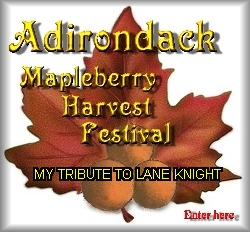
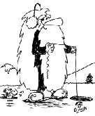

EMPTYPRIZE 2008SARANAC LAKE BUILDING PROJECTANSWER TO GOOSE SITUATION?RL STEVENSON COTTAGE SAGARL STEVENSON COTTAGE SAGA CONTINUES
EMPTYPRIZE 2008SARANAC LAKE BUILDING PROJECTANSWER TO GOOSE SITUATION?RL STEVENSON COTTAGE SAGARL STEVENSON COTTAGE SAGA CONTINUES TILTIN' WITH THE HILTONA LOG CABIN'S DIALOGUEHORSE'S ASPIRATIONSSNOWED INNDOWNHILL FROM HEREIN THE HOLE
TILTIN' WITH THE HILTONA LOG CABIN'S DIALOGUEHORSE'S ASPIRATIONSSNOWED INNDOWNHILL FROM HEREIN THE HOLE TROUBLE IN PARADISEGOOD TASTEPROTECTING THE LAKETHE MIRACLETHE GIFTSTRANGE NEW THREATANOTHER TRYGREENLOCKFINAL PLANLANGDON'S REMEDYPARKING DIRECTOR CON-MANRESIDENTS FOR RESPONSIBLE GROWTHA.P.A. RESTRICTIONSGREEN SLIMEWE SURVIVED ICE STORM '98THE SUB-WOOFERHO, HO, HUH?
TROUBLE IN PARADISEGOOD TASTEPROTECTING THE LAKETHE MIRACLETHE GIFTSTRANGE NEW THREATANOTHER TRYGREENLOCKFINAL PLANLANGDON'S REMEDYPARKING DIRECTOR CON-MANRESIDENTS FOR RESPONSIBLE GROWTHA.P.A. RESTRICTIONSGREEN SLIMEWE SURVIVED ICE STORM '98THE SUB-WOOFERHO, HO, HUH?BACK AROUND 1994, PETER FOUGHT TO HAVE VIRTUALLY ALL OF THE SIGNS IN WILMINGTON REMOVED BECAUSE THEY DIDN'T FIT IN WITH HIS CONCEPTION OF THE ADIRONDACK PARK. THE CITIZENS OF WILMINGTON WERE IN AN UPROAR! MOUNTAIN AL'S ANSWER TO PETER WAS IN THE FORM OF THIS BURMA-SHAVE STYLE SIGNAGE. PETER WAS OBVIOUSLY AMUSED AS HE ASKED FOR THE ORIGINAL OF THIS CARTOON WHEN HE LEFT THE APA IN 1995. PETER MAY HAVE BEEN A PAIN IN THE ASPLINS BUT, WITH HIS DEPARTURE, MOUNTAIN AL LOST A WORTHY TARGET FOR HIS SARCASTIC BARBS.
PETER PAINE - SIGN OF THE TIMESGUTTER BALLON THE RIGHT TRACK THE END OF THE BEGINNING

Scars On Ice(click Mountain Al) The Bloomingdale Moose Project(click moose)
The Bloomingdale Moose Project(click moose)